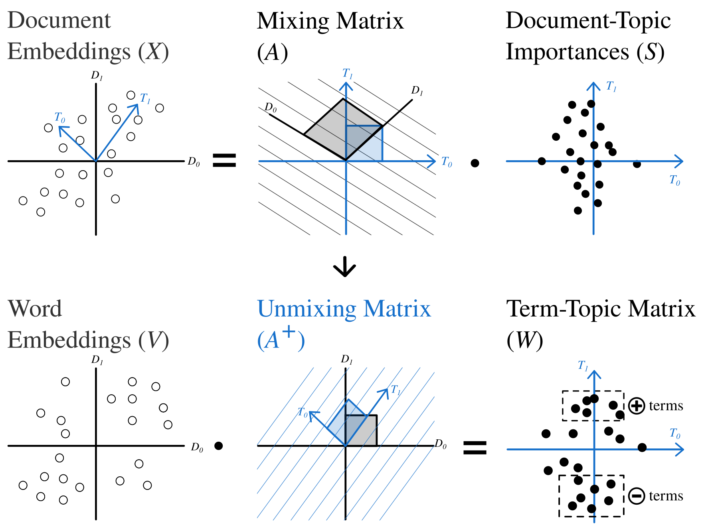
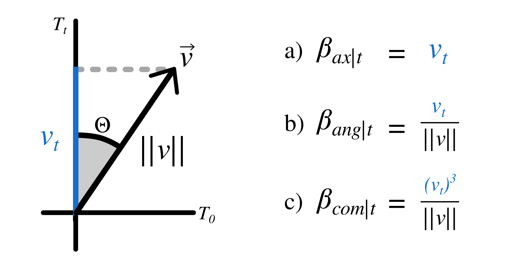
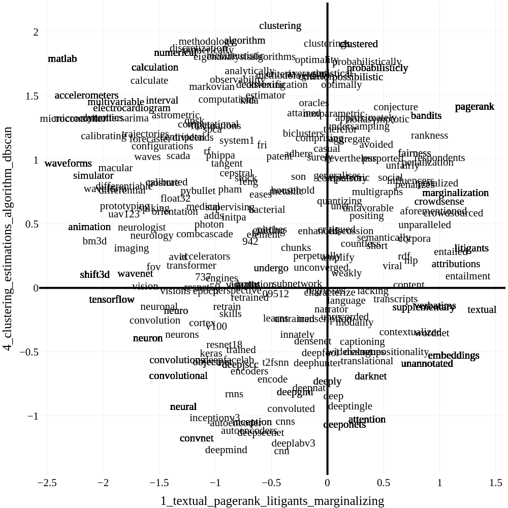

Semantic Signal Separation (\(S^3\))
Semantic Signal Separation tries to recover dimensions/axes along which most of the semantic variations can be explained. A topic in \(S^3\) is an axis of semantics in the corpus. This makes the model able to recover more nuanced topical content in documents, but is not optimal when you expect topics to be groupings of documents.
\(S^3\) is one of the fastest topic models out there, even rivalling vanilla NMF, when not accounting for embedding time. It also typically produces very high quality topics, and our evaluations indicate that it performs significantly better when no preprocessing is applied to texts.

How does \(S^3\) work?
Encoding
Documents in \(S^3\) get first encoded using an encoder model.
- Let the encodings of documents in the corpus be \(X\).
Decomposition
The next step is to decompose the embedding matrix using ICA, this step discovers the underlying semantics axes as latent independent components in the embeddings.
- Decompose \(X\) using FastICA: \(X = AS\), where \(A\) is the mixing matrix and \(S\) is the document-topic-matrix.
Term Importance Estimation
Term importances for each topic are calculated by encoding the entire vocabulary of the corpus using the same embedding model, then recovering the strength of each latent component in the word embedding matrix. The strength of the components in the words will be interpreted as the words' importance in a given topic.
- Let the matrix of word encodings be \(V\).
- Calculate the pseudo-inverse of the mixing matrix \(C = A^{+}\), where \(C\) is the unmixing matrix.
- Project word embeddings onto the semantic axes by multiplying them with unmixing matrix: \(W = VC^T\). \(W^T\) is then the topic-term matrix (
model.components_).

There are three distinct methods to calculate term importances from word projections:
- Axial word importances (
feature_importance="axial") are defined as the words' positions on the semantic axes. The importance of word \(j\) for topic \(t\) is: \(\beta_{tj} = W_{jt}\). - Angular topics (
feature_importance="angular") can be calculated by taking the cosine of the angle between projected word vectors and semantic axes: \(\beta_{tj} = cos(\Theta) = \frac{W_{jt}}{||W_j||}\) - Combined (
feature_importance="combined", this is the default) word importance is a combination of the two approaches \(\beta_{tj} = \frac{(W_{jt})^3}{||W_j||}\)
Typically, the difference between these is relatively minuscule in terms of performance. Based on our evaluations, however, we recommend that you use axial or combined topics. Axial topics tend to result in the most coherent topics, while angular topics result in the most distinct ones. The combined approach is a reasonable compromise between the two methods, and is thus the default.
Dynamic Topic Modeling (Optional)
\(S^3\) can also be used as a dynamic topic model. Temporally changing components are found using the following steps:
- Fit a global \(S^3\) model over the whole corpus.
- Estimate unmixing matrix for each time-slice by fitting a linear regression from the embeddings in the time slice to the document-topic-matrix for the time slice estimated by the global model.
- Estimate term importances for each time slice the same way as the global model.
from datetime import datetime
from turftopic import SemanticSignalSeparation
ts: list[datetime] = [datetime(year=2018, month=2, day=12), ...]
corpus: list[str] = ["First document", ...]
model = SemanticSignalSeparation(10).fit_dynamic(corpus, timestamps=ts, bins=10)
model.plot_topics_over_time()
Info
Topics over time in \(S^3\) are treated slightly differently to most other models. This is because topics are not proportional in \(S^3\), and can tip below zero. In the timeslices where a topic is below zero, its negative definition is displayed.
Model Refitting
Unlike most other models in Turftopic, \(S^3\) can be refit using different parameters and random seeds without needing to initialize the model from scratch. This makes \(S^3\) incredibly convenient for exploring different numbers of topics, or adjusting the number of iterations.
Refitting the model takes a fraction of the time of initializing a new one and fitting it, as the vocabulary doesn't have to be learned or encoded by the model again.
from turftopic import SemanticSignalSeparation
model = SemanticSignalSeparation(5, random_state=42)
model.fit(corpus)
print(len(model.topic_names))
# 5
model.refit(n_components=10, random_state=30)
print(len(model.topic_names))
# 10
Interpretation
Negative terms
Terms, which rank lowest on a topic have meaning in \(S^3\). Whenever interpreting semantic axes, you should probably consider both ends of the axis. As such, when you print or export topics from \(S^3\), the lowest ranking terms will also be shown along with the highest ranking ones.
Here's an example on ArXiv ML papers:
from turftopic import SemanticSignalSeparation
from sklearn.feature_extraction.text import CountVectorizer
model = SemanticSignalSeparation(5, vectorizer=CountVectorizer(), random_state=42)
model.fit(corpus)
model.print_topics(top_k=5)
| Positive | Negative | |
|---|---|---|
| 0 | clustering, histograms, clusterings, histogram, classifying | reinforcement, exploration, planning, tactics, reinforce |
| 1 | textual, pagerank, litigants, marginalizing, entailment | matlab, waveforms, microcontroller, accelerometers, microcontrollers |
| 2 | sparsestmax, denoiseing, denoising, minimizers, minimizes | automation, affective, chatbots, questionnaire, attitudes |
| 3 | rebmigraph, subgraph, subgraphs, graphsage, graph | adversarial, adversarially, adversarialization, adversary, security |
| 4 | clustering, estimations, algorithm, dbscan, estimation | cnn, deepmind, deeplabv3, convnet, deepseenet |
Concept Compass
If you want to gain a deeper understanding of terms' relation to axes, you can produce a concept compass. This involves plotting terms in a corpus along two semantic axes.
In order to use the compass in Turftopic you will need to have plotly installed:
pip install plotly
You can display a compass based on a fitted model like so:
fig = model.concept_compass(topic_x=1, topic_y=4)
fig.show()

API Reference
turftopic.models.decomp.SemanticSignalSeparation
Bases: ContextualModel, DynamicTopicModel
Separates the embedding matrix into 'semantic signals' with component analysis methods. Topics are assumed to be dimensions of semantics.
from turftopic import SemanticSignalSeparation
corpus: list[str] = ["some text", "more text", ...]
model = SemanticSignalSeparation(10).fit(corpus)
model.print_topics()
Parameters:
| Name | Type | Description | Default |
|---|---|---|---|
n_components
|
int
|
Number of topics. |
10
|
encoder
|
Union[Encoder, str]
|
Model to encode documents/terms, all-MiniLM-L6-v2 is the default. |
'sentence-transformers/all-MiniLM-L6-v2'
|
vectorizer
|
Optional[CountVectorizer]
|
Vectorizer used for term extraction. Can be used to prune or filter the vocabulary. |
None
|
decomposition
|
Optional[TransformerMixin]
|
Custom decomposition method to use.
Can be an instance of FastICA or PCA, or basically any dimensionality
reduction method. Has to have |
None
|
max_iter
|
int
|
Maximum number of iterations for ICA. |
200
|
feature_importance
|
Literal['axial', 'angular', 'combined']
|
Defines whether the word's position on an axis ('axial'), it's angle to the axis ('angular') or their combination ('combined') should determine the word's importance for a topic. |
'combined'
|
random_state
|
Optional[int]
|
Random state to use so that results are exactly reproducible. |
None
|
Source code in turftopic/models/decomp.py
26 27 28 29 30 31 32 33 34 35 36 37 38 39 40 41 42 43 44 45 46 47 48 49 50 51 52 53 54 55 56 57 58 59 60 61 62 63 64 65 66 67 68 69 70 71 72 73 74 75 76 77 78 79 80 81 82 83 84 85 86 87 88 89 90 91 92 93 94 95 96 97 98 99 100 101 102 103 104 105 106 107 108 109 110 111 112 113 114 115 116 117 118 119 120 121 122 123 124 125 126 127 128 129 130 131 132 133 134 135 136 137 138 139 140 141 142 143 144 145 146 147 148 149 150 151 152 153 154 155 156 157 158 159 160 161 162 163 164 165 166 167 168 169 170 171 172 173 174 175 176 177 178 179 180 181 182 183 184 185 186 187 188 189 190 191 192 193 194 195 196 197 198 199 200 201 202 203 204 205 206 207 208 209 210 211 212 213 214 215 216 217 218 219 220 221 222 223 224 225 226 227 228 229 230 231 232 233 234 235 236 237 238 239 240 241 242 243 244 245 246 247 248 249 250 251 252 253 254 255 256 257 258 259 260 261 262 263 264 265 266 267 268 269 270 271 272 273 274 275 276 277 278 279 280 281 282 283 284 285 286 287 288 289 290 291 292 293 294 295 296 297 298 299 300 301 302 303 304 305 306 307 308 309 310 311 312 313 314 315 316 317 318 319 320 321 322 323 324 325 326 327 328 329 330 331 332 333 334 335 336 337 338 339 340 341 342 343 344 345 346 347 348 349 350 351 352 353 354 355 356 357 358 359 360 361 362 363 364 365 366 367 368 369 370 371 372 373 374 375 376 377 378 379 380 381 382 383 384 385 386 387 388 389 390 391 392 393 394 395 396 397 398 399 400 401 402 403 404 405 406 407 408 409 410 411 412 413 414 415 416 417 418 419 420 421 422 423 424 425 426 427 428 429 430 431 432 433 434 435 436 437 438 439 440 441 442 443 444 445 446 447 448 449 450 451 452 453 454 455 456 457 458 459 460 461 462 463 464 465 466 467 468 469 470 471 472 473 474 475 476 477 478 479 480 481 482 483 484 485 486 487 488 489 490 491 492 493 494 495 496 497 498 499 500 501 502 503 504 505 506 507 508 509 510 511 512 513 514 515 516 517 518 519 520 521 522 523 524 525 526 527 528 529 530 531 532 533 534 535 536 537 538 539 540 541 542 543 544 545 546 547 548 549 550 551 552 553 554 555 556 557 558 559 560 561 562 563 564 565 566 567 568 569 570 571 572 573 574 575 576 577 578 579 580 581 582 583 584 585 586 587 588 589 590 591 592 593 594 595 596 597 598 599 600 601 602 603 604 605 606 607 608 609 610 611 612 613 614 615 616 617 618 619 620 621 622 623 624 625 626 | |
angular_components_
property
Reweights words based on their angle in ICA-space to the axis base vectors.
angular_temporal_components_
property
Reweights words based on their angle in ICA-space to the axis base vectors in a dynamic model.
concept_compass(topic_x, topic_y)
Display a compass of concepts along two semantic axes. In order for the plot to be concise and readable, terms are randomly selected on a grid of the two topics.
Parameters:
| Name | Type | Description | Default |
|---|---|---|---|
topic_x
|
Union[int, str]
|
Index or name of the topic to display on the X axis. |
required |
topic_y
|
Union[str, int]
|
Index or name of the topic to display on the Y axis. |
required |
Returns:
| Type | Description |
|---|---|
Figure
|
Plotly interactive plot of the concept compass. |
Source code in turftopic/models/decomp.py
446 447 448 449 450 451 452 453 454 455 456 457 458 459 460 461 462 463 464 465 466 467 468 469 470 471 472 473 474 475 476 477 478 479 480 481 482 483 484 485 486 487 488 489 490 491 492 493 494 495 496 497 498 499 500 501 502 503 504 505 506 507 508 509 510 511 512 513 514 515 516 517 518 519 | |
estimate_components(feature_importance)
Reestimates components based on the chosen feature_importance method.
Source code in turftopic/models/decomp.py
97 98 99 100 101 102 103 104 105 106 107 108 109 110 111 112 113 114 115 116 117 118 119 | |
refit(n_components=None, max_iter=None, random_state=None)
Refits model with the given parameters. This is significantly faster than fitting a new model from scratch.
Parameters:
| Name | Type | Description | Default |
|---|---|---|---|
n_components
|
Optional[int]
|
Number of topics. |
None
|
max_iter
|
Optional[int]
|
Maximum number of iterations for ICA. |
None
|
random_state
|
Optional[int]
|
Random state to use so that results are exactly reproducible. |
None
|
Returns:
| Type | Description |
|---|---|
Refitted model.
|
|
Source code in turftopic/models/decomp.py
320 321 322 323 324 325 326 327 328 329 330 331 332 333 334 335 336 337 338 339 340 341 342 343 | |
refit_transform(n_components=None, max_iter=None, random_state=None)
Refits model with the given parameters. This is significantly faster than fitting a new model from scratch.
Parameters:
| Name | Type | Description | Default |
|---|---|---|---|
n_components
|
Optional[int]
|
Number of topics. |
None
|
max_iter
|
Optional[int]
|
Maximum number of iterations for ICA. |
None
|
random_state
|
Optional[int]
|
Random state to use so that results are exactly reproducible. |
None
|
Returns:
| Type | Description |
|---|---|
ndarray of shape (n_documents, n_topics)
|
Document-topic matrix. |
Source code in turftopic/models/decomp.py
183 184 185 186 187 188 189 190 191 192 193 194 195 196 197 198 199 200 201 202 203 204 205 206 207 208 209 210 211 212 213 214 215 216 217 218 219 220 221 222 223 224 225 226 227 228 229 230 231 232 233 234 235 236 | |
refit_transform_dynamic(timestamps, bins=10, n_components=None, max_iter=None, random_state=None)
Refits \(S^3\) to be a dynamic model.
Source code in turftopic/models/decomp.py
277 278 279 280 281 282 283 284 285 286 287 288 289 290 291 292 293 294 295 296 297 298 299 300 301 302 303 304 305 306 307 308 309 310 311 312 313 314 315 316 317 318 | |
transform(raw_documents, embeddings=None)
Infers topic importances for new documents based on a fitted model.
Parameters:
| Name | Type | Description | Default |
|---|---|---|---|
raw_documents
|
Documents to fit the model on. |
required | |
embeddings
|
Optional[ndarray]
|
Precomputed document encodings. |
None
|
Returns:
| Type | Description |
|---|---|
ndarray of shape (n_dimensions, n_topics)
|
Document-topic matrix. |
Source code in turftopic/models/decomp.py
374 375 376 377 378 379 380 381 382 383 384 385 386 387 388 389 390 391 392 393 | |